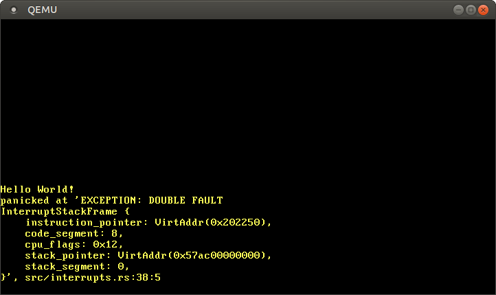

ุฎุทุงูุง ุฏฺูฏุงูู
ู ุญุชูุง ุชุฑุฌู ู ุดุฏู: ุงู ฺฉ ุชุฑุฌู ู از ุฌุงู ุนู ฺฉุงุฑุจุฑุงู ุจุฑุง پست Double Faults است. ู ู ฺฉู است ูุงูุตุ ู ูุณูุฎ ุดุฏู ุง ุฏุงุฑุง خطا باشد. ูุทูุง ูุฑ ฺฏููู ู ุดฺฉู را در ุงู ุงุดู گزارش ุฏูุฏ!
ุชุฑุฌู ู ุชูุณุท @hamidrezakp ู @MHBahrampour.
ุงู پست ุจู ุทูุฑ ุฏูู ุฌุฒุฆุงุช ุงุณุชุซูุง خطا ุฏฺูฏุงูู (ุชุฑุฌู ู: double fault exception) را ุจุฑุฑุณ ู โฺฉูุฏุ ุงู ุงุณุชุซูุง ฺููฏุงู رخ ู โุฏูุฏ ฺฉู CPU ูุชูุงูุฏ ฺฉ ฺฉูุชุฑู ฺฉููุฏู ุงุณุชุซูุง را ูุฑุงุฎูุงู ฺฉูุฏ. با ฺฉูุชุฑู ุงู ุงุณุชุซูุงุ از ุจุฑูุฒ ุฎุทุงูุง ุณู ฺฏุงูู (ุชุฑุฌู ู: triple faults) ฺฉุดูุฏู ฺฉู باعث ุฑุณุช (ฺฉูู ู: reset) ุดุฏู ุณุณุชู ู โุดููุฏุ ุฌฺููฏุฑ ู โฺฉูู . ุจุฑุง ุฌฺููฏุฑ از ุฎุทุงูุง ุณู ฺฏุงูู در ูู ู ู ูุงุฑุฏุ ู ุง ูู ฺูู ฺฉ Interrupt Stack Table را ุชูุธู ฺฉุฑุฏูโุงู تا ุฎุทุงูุง ุฏฺูฏุงูู را ุฑู ฺฉ ูพุดุชู ูุณุชู ุฌุฏุงฺฏุงูู ุจฺฏุฑุฏ.
ุงู ุจูุงฺฏ ุจุตูุฑุช آزاد ุฑู ฺฏุชโูุงุจ ุชูุณุนู ุฏุงุฏู ุดุฏู است. اگر ุดู
ุง ู
ุดฺฉู ุง ุณูุงู ุฏุงุฑุฏุ ูุทูุงู ุขูโุฌุง ฺฉ ุงุดู باز ฺฉูุฏ. ุดู
ุง ูู
ฺูู ู
โุชูุงูุฏ در ุฒุฑ ุงู پست ฺฉุงู
ูุช ุจฺฏุฐุงุฑุฏ. ู
ูุจุน کد ฺฉุงู
ู ุงู پست را ู
โุชูุงูุฏ در ุจูุฑฺูู post-06 ูพุฏุง ฺฉูุฏ.
ููุฑุณุช ู ุทุงูุจ
๐ุฎุทุง ุฏฺูฏุงูู ฺุณุชุ
ุจู عبارت ุณุงุฏูุ خطا ุฏฺูฏุงูู ฺฉ ุงุณุชุซูุง ุจู ุฎุตูุต است ู ฺููฏุงู
رخ ู
โุฏูุฏ ฺฉู CPU ูุชูุงูุฏ ฺฉ ฺฉูุชุฑู ฺฉููุฏู ุงุณุชุซูุง را ูุฑุงุฎูุงู ฺฉูุฏ. ุจู ุนููุงู ู
ุซุงูุ ุงู ุงุชูุงู ฺููฏุงู
رخ ู
โุฏูุฏ ฺฉู ฺฉ page fault (ุชุฑุฌู
ู: خطا ุตูุญู) رخ ุฏูุฏ ุงู
ุง ฺู ฺฉูุชุฑู ฺฉููุฏู خطا در ุฌุฏูู ุชูุตู ฺฉููุฏู ูููู (ุชุฑุฌู
ู: Interrupt Descriptor Table) ثبت ูุดุฏู باشد. ุจูุงุจุฑุงู ุจู ููุน ุดุจู ุจูุงฺฉโูุง ูู
ู ฺฏุฑ در ุฒุจุงูโูุง ุจุฑูุงู
ูโููุณ با ุงุณุชุซูุงูุง ู
โุจุงุดุฏุ ุจู ุนููุงู ู
ุซุงู catch(...) در ++C ุง catch(Exception e) در ุฌุงูุง ู #C.
خطا ุฏฺูฏุงูู ู
ุงููุฏ ฺฉ ุงุณุชุซูุง ุนุงุฏ ุฑูุชุงุฑ ู
โฺฉูุฏ. ุฏุงุฑุง ุดู
ุงุฑู ฺูฉุชูุฑ (ฺฉูู
ู: vector) 8 است ู ู
ุง ู
โุชูุงูู
ฺฉ تابع ุทุจุน ฺฉูุชุฑู ฺฉููุฏู ุจุฑุง ุขู در IDT ุชุนุฑู ฺฉูู
. ุชูู ฺฉ ฺฉูุชุฑู ฺฉููุฏู خطا ุฏฺูฏุงูู ุจุณุงุฑ ู
ูู
ุงุณุชุ ุฒุฑุง اگر ฺฉ خطا ุฏฺูฏุงูู ฺฉูุชุฑู ูุดูุฏุ ฺฉ خطا ฺฉุดูุฏู ุณู ฺฏุงูู رخ ู
โุฏูุฏ. ุฎุทุงูุง ุณู ฺฏุงูู ูุงุจู ฺฉุดู ูุณุชูุฏ ู اکثر سخت ุงูุฒุงุฑูุง با ุชูุธู
ู
ุฌุฏุฏ ุณุณุชู
ูุงฺฉูุด ูุดุงู ู
โุฏููุฏ.
๐ุฑุงูโุงูุฏุงุฒ ฺฉ خطا ุฏฺูฏุงูู
ุจุงุฏ ฺฉ خطا ุฏฺูฏุงูู را با ุฑุงูโุงูุฏุงุฒ (ุชุฑุฌู ู: triggering) ฺฉ ุงุณุชุซูุง ุจุฑุง ุขู ุงุฌุงุฏ ฺฉูู ุ ู ุง ูููุฒ ฺฉ تابع ฺฉูุชุฑู ฺฉููุฏู ุชุนุฑู ฺูฉุฑุฏูโุงู :
// in src/main.rs
#[no_mangle]
pub extern "C" fn _start() -> ! {
println!("Hello World{}", "!");
blog_os::init();
// trigger a page fault
unsafe {
*(0xdeadbeef as *mut u64) = 42;
};
// as before
#[cfg(test)]
test_main();
println!("It did not crash!");
loop {}
}
ุจุฑุง ููุดุชู در آدرس ูุงู
ุนุชุจุฑ 0xdeadbeef از unsafe ุงุณุชูุงุฏู ู
โฺฉูู
. آدرس ู
ุฌุงุฒ در ุฌุฏุงูู ุตูุญู ุจู آدرس ูุฒฺฉ ู
ูพ ูู
โุดูุฏุ ุจูุงุจุฑุงู خطا ุตูุญู رخ ู
โุฏูุฏ. ู
ุง ฺฉ ฺฉูุชุฑู ฺฉููุฏู خطا ุตูุญู در IDT ุฎูุฏ ثبت ฺูฉุฑุฏูโุงู
ุ ุจูุงุจุฑุงู ฺฉ خطا ุฏฺูฏุงูู رخ ู
โุฏูุฏ.
ุญุงู ููุช ูุณุชู را اجرا ู โฺฉูู ุ ู โุจูู ฺฉู ูุงุฑุฏ ฺฉ ุญููู ุจูุช ุจโูพุงุงู ู โุดูุฏ. ุฏูุงู ุญููู ุจูุช ุจู شرح ุฒุฑ است:
۱. ุณโูพโู ุณุน ุจู ููุดุชู در 0xdeadbeef ุฏุงุฑุฏุ ฺฉู باعث خطا ุตูุญู ู
โุดูุฏ.
۲. ุณโูพโู ุจู ูุฑูุฏ ู
ุฑุจูุทู در IDT ฺูฏุงู ู
โฺฉูุฏ ู ู
โุจูุฏ ฺฉู ฺู تابع ฺฉูุชุฑู ฺฉููุฏูโุง ู
ุดุฎุต ูุดุฏู است. ุจูุงุจุฑุงูุ ูู
โุชูุงูุฏ ฺฉูุชุฑู ฺฉููุฏู خطا ุตูุญู را ูุฑุงุฎูุงู ฺฉูุฏ ู ฺฉ خطا ุฏฺูฏุงูู رخ ู
โุฏูุฏ.
۳. ุณโูพโู ูุฑูุฏ IDT ฺฉูุชุฑู ฺฉููุฏู خطا ุฏู ฺฏุงูู را ุจุฑุฑุณ ู
โฺฉูุฏุ ุงู
ุง ุงู ูุฑูุฏ ูู
تابع ฺฉูุชุฑู ฺฉููุฏูโุง را ู
ุดุฎุต ูู
โฺฉูุฏ. ุจูุงุจุฑุงูุ ฺฉ خطا ุณูโฺฏุงูู رخ ู
โุฏูุฏ.
۴. خطا ุณู ฺฏุงูู ฺฉุดูุฏู است. QEMU ู
ุงููุฏ اکثر سخت ุงูุฒุงุฑูุง ูุงูุน ุจู ุขู ูุงฺฉูุด ูุดุงู ุฏุงุฏู ุฏุณุชูุฑ ุฑุณุช ุดุฏู ุณุณุชู
را صادر ู
โฺฉูุฏ.
ุจูุงุจุฑุงู ุจุฑุง ุฌฺููฏุฑ از ุงู خطا ุณูโฺฏุงููุ ุจุงุฏ ฺฉ تابع ฺฉูุชุฑู ฺฉููุฏู ุจุฑุง ุฎุทุงูุง ุตูุญู ุง ฺฉ ฺฉูุชุฑู ฺฉููุฏู خطا ุฏฺูฏุงูู ุงุฑุงุฆู ุฏูู . ู ุง ู โุฎูุงูู در ูู ู ู ูุงุฑุฏ از ุฎุทุงูุง ุณู ฺฏุงูู ุฌฺููฏุฑ ฺฉูู ุ ุจูุงุจุฑุงู ุจุงุฏ با ฺฉ ฺฉูุชุฑู ฺฉููุฏู خطا ุฏฺูฏุงูู ุดุฑูุน ฺฉูู ฺฉู ุจุฑุง ูู ู ุงููุงุน ุงุณุชุซูุง ุจุฏูู ฺฉูุชุฑู ูุฑุงุฎูุงู ู โุดูุฏ.
๐ฺฉูุชุฑู ฺฉููุฏู خطا ุฏฺูฏุงูู
خطا ุฏฺูฏุงูู ฺฉ ุงุณุชุซูุง ุนุงุฏ با کد خطا ุงุณุชุ ุจูุงุจุฑุงู ู โุชูุงูู ฺฉ تابع ฺฉูุชุฑู ฺฉููุฏู ู ุดุงุจู ฺฉูุชุฑู ฺฉููุฏู ููุทู شکست (ุชุฑุฌู ู: breakpoint) ุชุนู ฺฉูู :
// in src/interrupts.rs
lazy_static! {
static ref IDT: InterruptDescriptorTable = {
let mut idt = InterruptDescriptorTable::new();
idt.breakpoint.set_handler_fn(breakpoint_handler);
idt.double_fault.set_handler_fn(double_fault_handler); // new
idt
};
}
// new
extern "x86-interrupt" fn double_fault_handler(
stack_frame: InterruptStackFrame, _error_code: u64) -> !
{
panic!("EXCEPTION: DOUBLE FAULT\n{:#?}", stack_frame);
}
ฺฉูุชุฑู ฺฉููุฏู ู
ุง ฺฉ ูพุงู
خطا ฺฉูุชุงู ฺุงูพ ู
โฺฉูุฏ ู ูุงุจ ูพุดุชู ุงุณุชุซูุง را ุชุฎูู ู
โฺฉูุฏ. کد خطا ฺฉูุชุฑู ฺฉููุฏู خطا ุฏฺูฏุงูู ูู
ุดู ุตูุฑ ุงุณุชุ ุจูุงุจุฑุงู ุฏูู ุจุฑุง ฺุงูพ ุขู ูุฌูุฏ ูุฏุงุฑุฏ. ฺฉ ุชูุงูุช در ฺฉูุชุฑู ฺฉููุฏู ููุทู شکست ุงู است ฺฉู ฺฉูุชุฑู ฺฉููุฏู خطا ุฏฺูฏุงูู diverging (ุชุฑุฌู
ู: ูุงฺฏุฑุง) است. ฺูู ู
ุนู
ุงุฑ x86_64 ุงู
ฺฉุงู بازگشت از ฺฉ ุงุณุชุซูุง خطا ุฏฺูฏุงูู را ูุฏุงุฑุฏ.
ุญุงู ููุช ูุณุชู را اجرا ู โฺฉูู ุ ุจุงุฏ ุจุจูู ฺฉู ฺฉูุชุฑู ฺฉููุฏู خطا ุฏฺูฏุงูู ูุฑุงุฎูุงู ู โุดูุฏ:

کار کرد! ุขูโฺู ุงู بار ุงุชูุงู ู โุงูุชุฏ ุจุตูุฑุช ุฒุฑ است:
۱. ุณโูพโู ุณุน ุจู ููุดุชู در 0xdeadbeef ุฏุงุฑุฏุ ฺฉู باعث خطا ุตูุญู ู
โุดูุฏ.
۲. ู
ุงููุฏ ูุจูุ ุณโูพโู ุจู ูุฑูุฏ ู
ุฑุจูุทู در IDT ฺูฏุงู ู
โฺฉูุฏ ู ู
โุจูุฏ ฺฉู ฺู تابع ฺฉูุชุฑู ฺฉููุฏูโุง ู
ุดุฎุต ูุดุฏู است. ุจูุงุจุฑุงูุ ฺฉ خطا ุฏฺูฏุงูู رخ ู
โุฏูุฏ.
۳. ุณโูพโู ุจู ฺฉูุชุฑู ฺฉููุฏู خطا ุฏฺูฏุงูู - ฺฉู ุงฺฉููู ูุฌูุฏ دارد - ู
โุฑูุฏ.
خطا ุณู ฺฏุงูู (ู ุญููู ุจูุช) ุฏฺฏุฑ رخ ูู โุฏูุฏุ ุฒุฑุง ุงฺฉููู CPU ู โุชูุงูุฏ ฺฉูุชุฑู ฺฉููุฏู خطا ุฏฺูฏุงูู را ูุฑุงุฎูุงู ฺฉูุฏ.
ุงู ฺฉุงู ูุงู ุณุงุฏู ุจูุฏ! پس ฺุฑุง ู ุง ุจุฑุง ุงู ู ูุถูุน ุจู ฺฉ پست ฺฉุงู ู ูุงุฒ ุฏุงุฑู ุ ุฎุจุ ู ุง ุงฺฉููู ูุงุฏุฑ ุจู ุฑุฏุงุจ اکثر ุฎุทุงูุง ุฏฺูฏุงูู ูุณุชู ุ ุงู ุง ู ูุงุฑุฏ ูุฌูุฏ دارد ฺฉู ุฑฺูฉุฑุฏ ูุนู ู ุง ฺฉุงู ูุณุช.
๐ุนูู رخ داد خطا ุฏฺูฏุงูู
ูุจู از ุจุฑุฑุณ ู ูุงุฑุฏ ุฎุงุตุ ุจุงุฏ ุนูู ุฏูู ุฎุทุงูุง ุฏฺูฏุงูู را ุจุฏุงูู . در ุจุงูุงุ ู ุง از ฺฉ ุชุนุฑู ฺฉุงู ูุง ู ุจูู ุงุณุชูุงุฏู ฺฉุฑุฏู :
خطا ุฏฺูฏุงูู ฺฉ ุงุณุชุซูุง ุจู ุฎุตูุต است ู ฺููฏุงู رخ ู โุฏูุฏ ฺฉู CPU ูุชูุงูุฏ ฺฉ ฺฉูุชุฑู ฺฉููุฏู ุงุณุชุซูุง را ูุฑุงุฎูุงู ฺฉูุฏ.
عبارت โfails to invokeโ ุฏููุง ฺู ู ุนูุง ุฏุงุฑุฏุ ฺฉูุชุฑู ฺฉููุฏู ูุฌูุฏ ูุฏุงุฑุฏุ ฺฉูุชุฑู ฺฉููุฏู خارج ุดุฏู (ู ูุธูุฑ ุงู است ฺฉู ุขุง ุตูุญู ู ุฑุจูุท ุจู ฺฉูุชุฑู ฺฉููุฏู از ุญุงูุธู خارج ุดุฏู)ุ ู اگر ฺฉูุชุฑู ฺฉููุฏู ุฎูุฏุด باعث رخ ุฏุงุฏู ฺฉ ุงุณุชุซูุงูุง ุดูุฏุ ฺู ุงุชูุงู رخ ู โุฏูุฏุ
ุจู ุนููุงู ู ุซุงูุ ฺู ุงุชูุงู ู โุงูุชุฏ اگر:
۱. ฺฉ ุงุณุชุซูุง ููุทู شکست رخ ู โุฏูุฏุ ุขุง تابع ฺฉูุชุฑู ฺฉููุฏู ู ุฑุจูุทู خارج ุดุฏู ุงุณุชุ ۲. ฺฉ خطا ุตูุญู رخ ู โุฏูุฏุ ุขุง ฺฉูุชุฑู ฺฉููุฏู خطا ุตูุญู خارج ุดุฏู ุงุณุชุ ۳. ฺฉูุชุฑู ฺฉููุฏูโ ยซุชูุณู بر ุตูุฑยป باعث رخ ุฏุงุฏู ฺฉ ุงุณุชุซูุง ููุทู شکست ู โุดูุฏุ ุขุง ฺฉูุชุฑู ฺฉููุฏู ููุทู شکست خارج ุดุฏู ุงุณุชุ ۴. ูุณุชู ู ุง ูพุดุชู ุฎูุฏ را ุณุฑุฑุฒ ู โฺฉูุฏ ู ุขุง ุตูุญู ู ุญุงูุธ (ุชุฑุฌู ู: guard page) ุถุฑุจู ู โุฎูุฑุฏุ
ุฎูุดุจุฎุชุงููุ ฺฉุชุงุจฺู ุฑุงููู ุง AMD64 (PDF) ฺฉ ุชุนุฑู ุฏูู دارد (در بخش 8.2.9). ู ุทุงุจู ุขูุ โฺฉ ุงุณุชุซูุง خطا ุฏฺูฏุงูู ู โุชูุงูุฏ ุฒู ุงู ุงุชูุงู ุจูุชุฏ ฺฉู ฺฉ ุงุณุชุซูุง ุฏูู ฺููฏุงู کار با ฺฉ ฺฉูุชุฑู ฺฉููุฏู ุงุณุชุซูุง ูุจู (ุงูู) رخ ุฏูุฏโ. โู ุชูุงูุฏโ ู ูู است: ููุท ุชุฑฺฉุจ ุจุณุงุฑ خاص از ุงุณุชุซูุงูุง ู ูุฌุฑ ุจู خطا ุฏฺูฏุงูู ู โุดูุฏ. ุงู ุชุฑฺฉุจุงุช ุนุจุงุฑุชูุฏ از:
ุจูุงุจุฑุงู ุจู ุนููุงู ู ุซุงูุ ฺฉ خطا ุชูุณู بر ุตูุฑ (ุชุฑุฌู ู: Divide-by-zero) ู ุจู ุฏูุจุงู ุขู خطا ุตูุญู (ุชุฑุฌู ู: Page Fault)ุ ุฎูุจ است (ฺฉูุชุฑู ฺฉููุฏู خطا ุตูุญู ูุฑุงุฎูุงู ู โุดูุฏ)ุ ุงู ุง خطا ุชูุณู بر ุตูุฑ ู ุจู ุฏูุจุงู ุขู ฺฉ خطا ู ุญุงูุธุช ุนู ูู (ุชุฑุฌู ู: General Protection) ู ูุฌุฑ ุจู خطا ุฏฺูฏุงูู ู ุดูุฏ.
با ฺฉู ฺฉ ุงู ุฌุฏูู ู โุชูุงูู ุจู ุณู ู ูุฑุฏ ุงูู از ุณูุงูโูุง ุจุงูุง پاسخ ุฏูู :
۱. اگر ฺฉ ุงุณุชุซูุง ููุทู شکست ุงุชูุงู ุจูุชุฏ ู تابع ู ุฑุจูุท ุจู ฺฉูุชุฑู ฺฉููุฏู ุขู خارج ุดุฏู ุจุงุดุฏุ ฺฉ خطا ุตูุญู رخ ู โุฏูุฏ ู ฺฉูุชุฑู ฺฉููุฏู خطا ุตูุญู ูุฑุงุฎูุงู ู โุดูุฏ. ۲. اگر خطا ุตูุญู رخ ุฏูุฏ ู ฺฉูุชุฑู ฺฉููุฏู خطا ุตูุญู خارج ุดุฏู ุจุงุดุฏุ ฺฉ خطا ุฏฺูฏุงูู رخ ู โุฏูุฏ ู ฺฉูุชุฑู ฺฉููุฏู خطا ุฏฺูฏุงูู ูุฑุงุฎูุงู ู โุดูุฏ. ۳. اگر ฺฉ ฺฉูุชุฑู ฺฉููุฏู ุชูุณู بر ุตูุฑ باعث ุงุณุชุซูุง ููุทู شکست ุดูุฏุ CPU ุณุน ู โฺฉูุฏ تا ฺฉูุชุฑู ฺฉููุฏู ููุทู شکست را ูุฑุงุฎูุงู ฺฉูุฏ. اگر ฺฉูุชุฑู ฺฉููุฏู ููุทู شکست خارج ุดุฏู ุจุงุดุฏุ ฺฉ خطا ุตูุญู رخ ู โุฏูุฏ ู ฺฉูุชุฑู ฺฉููุฏู خطا ุตูุญู ูุฑุงุฎูุงู ู โุดูุฏ.
در ุญููุชุ ุญุช ู ูุงุฑุฏ ุงุณุชุซูุง ุจุฏูู تابع ฺฉูุชุฑู ฺฉููุฏู در IDT ูุฒ از ุงู طرح ูพุฑู ู โฺฉูุฏ: ููุช ุงุณุชุซูุง رخ ู โุฏูุฏุ CPU ุณุน ู โฺฉูุฏ ูุฑูุฏ IDT ู ุฑุจูุทู را ุจุฎูุงูุฏ. از ุขูโุฌุง ฺฉู ูุฑูุฏ 0 ุงุณุชุ ฺฉู ฺฉ ูุฑูุฏ IDT ู ุนุชุจุฑ ูุณุชุ ฺฉ خطا ู ุญุงูุธุช ฺฉู رخ ู โุฏูุฏ. ู ุง ฺฉ تابع ฺฉูุชุฑู ฺฉููุฏู ุจุฑุง خطا ู ุญุงูุธุช ุนู ูู ูุฒ ุชุนุฑู ฺูฉุฑุฏู ุ ุจูุงุจุฑุงู ฺฉ خطا ู ุญุงูุธุช ุนู ูู ุฏฺฏุฑ رخ ู โุฏูุฏ. ุทุจู ุฌุฏููุ ุงู ู ูุฌุฑ ุจู ฺฉ خطا ุฏฺูฏุงูู ู โุดูุฏ.
๐ุณุฑุฑุฒู ูพุดุชูโ ูุณุชู
ุจุงุฏ ุจู ุณูุงู ฺูุงุฑู ฺูฏุงู ฺฉูู :
ฺู ุงุชูุงู ู โุงูุชุฏ اگر ูุณุชู ู ุง ูพุดุชู ุฎูุฏ را ุณุฑุฑุฒ ฺฉูุฏ ู ุตูุญู ู ุญุงูุธ ุถุฑุจู ุจุฎูุฑุฏุ
ฺฉ ุตูุญู ู ุญุงูุธ ฺฉ ุตูุญู ุญุงูุธู ฺูู در ูพุงู ูพุดุชู است ฺฉู ุงู ฺฉุงู ุชุดุฎุตู ุณุฑุฑุฒ ูพุดุชู را ูุฑุงูู ู โฺฉูุฏ. ุตูุญู ุจู ฺู ูุงุจ ูุฒฺฉ ู ูพ ูุดุฏู ุงุณุชุ ุจูุงุจุฑุงู ุฏุณุชุฑุณ ุจู ุขู باعث خطا ุตูุญู ู โุดูุฏ ุจู ุฌุง ุงฺูฉู ุจ صدا ุญุงูุธู ุฏฺฏุฑ را خراب ฺฉูุฏ. ุจูุชโููุฏุฑ ฺฉ ุตูุญู ู ุญุงูุธ ุจุฑุง ูพุดุชู ูุณุชู ู ุง ุชูุธู ู โฺฉูุฏุ ุจูุงุจุฑุงู ุณุฑุฑุฒ ูพุดุชู باعث خطا ุตูุญู ู โุดูุฏ.
ฺููฏุงู ฺฉู خطا ุตูุญู رخ ู โุฏูุฏุ ูพุฑุฏุงุฒูุฏู ุจู ุฏูุจุงู ฺฉูุชุฑู ฺฉููุฏู خطا ุตูุญู در IDT است ู ุณุน ู โฺฉูุฏ تا ูุงุจ ูพุดุชู ูููู را ุจู ูพุดุชู ูพูุด ู โฺฉูุฏ. با ุงู ุญุงูุ ุงุดุงุฑูโฺฏุฑ ูพุดุชู ูุนู ูููุฒ ุจู ุตูุญู ู ุญุงูุธ ุงุดุงุฑู ู โฺฉูุฏ ฺฉู ู ูุฌูุฏ ูุณุช. ุจูุงุจุฑุงูุ خطا ุตูุญู ุฏูู رخ ู โุฏูุฏุ ฺฉู باعث خطا ุฏฺูฏุงูู ู โุดูุฏ (ู ุทุงุจู ุฌุฏูู ููู).
ุจูุงุจุฑุงู ุญุงูุง ูพุฑุฏุงุฒูุฏู ุณุน ู โฺฉูุฏ ฺฉูุชุฑู ฺฉููุฏู خطا ุฏฺูฏุงูู را ูุฑุงุฎูุงู ฺฉูุฏ. با ุงู ุญุงูุ ฺููฏุงู رخ ุฏุงุฏู خطا ุฏฺูฏุงูู ูพุฑุฏุงุฒูุฏู ุณุน ู โฺฉูุฏ تا ูุงุจ ูพุดุชู ุงุณุชุซูุง را ูุฒ ูพูุด ฺฉูุฏ. ุงุดุงุฑูโฺฏุฑ ูพุดุชู ูููุฒ ุจู ุณู ุช ุตูุญู ู ุญุงูุธ ุงุณุชุ ุจูุงุจุฑุงู ฺฉ خطا ุตูุญู ุณูู رخ ู โูุฏ ฺฉู باعث ฺฉ خطا ุณูโฺฏุงูู ู ุฑุงู ุงูุฏุงุฒ ู ุฌุฏุฏ ุณุณุชู ู โุดูุฏ. ุจูุงุจุฑุงู ฺฉูุชุฑู ฺฉููุฏู خطا ุฏฺูฏุงูู ูุนู ู ุง ูู โุชูุงูุฏ از خطا ุณูโฺฏุงูู در ุงู ู ูุฑุฏ ุฌฺููฏุฑ ฺฉูุฏ.
ุจุงุฏ ุฎูุฏู ุงู ุงู ุชุญุงู ฺฉูู ! ู ุง ู โุชูุงูู با ูุฑุงุฎูุงู تابع ฺฉู ุจู ุทูุฑ ุจโูููู بازگشت ู โุงุจุฏุ ุจู ุฑุงุญุช ุณุฑุฑุฒ ูพุดุชู ูุณุชู را ุชุญุฑฺฉ ฺฉูู (باعث رخ ุฏุงุฏู ฺฉ ุณุฑุฑุฒ ูพุดุชู ูุณุชู ุดูู ):
// in src/main.rs
#[no_mangle] // don't mangle the name of this function
pub extern "C" fn _start() -> ! {
println!("Hello World{}", "!");
blog_os::init();
fn stack_overflow() {
stack_overflow(); // for each recursion, the return address is pushed
}
// trigger a stack overflow
stack_overflow();
[โฆ] // test_main(), println(โฆ), and loop {}
}
ููุช ุงู کد را در QEMU ุงู ุชุญุงู ู โฺฉูู ุ ู โุจูู ฺฉู ุณุณุชู ุฏูุจุงุฑู ูุงุฑุฏ ฺฉ ุญููู ุจูุช ู โุดูุฏ.
ุจูุงุจุฑุงู ฺฺฏููู ู โุชูุงูู از ุจุฑูุฒ ุงู ู ุดฺฉู ุฌฺููฏุฑ ฺฉูู ุ ู ุง ูู โุชูุงูู ูพูุด ฺฉุฑุฏู ูุงุจ ูพุดุชู ุงุณุชุซูุง را ุญุฐู ฺฉูู ุ ุฒุฑุง ูพุฑุฏุงุฒูุฏู ุฎูุฏ ุงู کار را ุงูุฌุงู ู โุฏูุฏ. ุจูุงุจุฑุงู ู ุง ุจุงุฏ ุจู ูุญู ุงุทู ูุงู ุญุงุตู ฺฉูู ฺฉู ููุช ฺฉ ุงุณุชุซูุง خطا ุฏฺูฏุงูู رخ ู โุฏูุฏุ ูพุดุชู ูู ุดู ู ุนุชุจุฑ است. ุฎูุดุจุฎุชุงููุ ู ุนู ุงุฑ x86_64 ุฑุงู ุญู ุจุฑุง ุงู ู ุดฺฉู دارد.
๐ุชุนูุถ ูพุดุชูโูุง
ู ุนู ุงุฑ x86_64 ูุงุฏุฑ است در ุตูุฑุช ูููุน ฺฉ ุงุณุชุซูุง ุจู ฺฉ ูพุดุชู از ูพุด ุชุนุฑู ุดุฏู ู ุดูุงุฎุชู ุดุฏู ุชุนูุถ ุดูุฏ. ุงู ุชุนูุถ در سطح سخت ุงูุฒุงุฑ ุงุชูุงู ู โุงูุชุฏุ ุจูุงุจุฑุงู ู โุชูุงู ุขู را ูุจู از ุงฺูฉู ูพุฑุฏุงุฒูุฏู ูุงุจ ูพุดุชู ุงุณุชุซูุง را ูพูุด ฺฉูุฏุ ุงูุฌุงู داد.
ู ฺฉุงูุฒู ุชุนูุถ ุจู ุนููุงู Interrupt Stack Table (IST) ูพุงุฏูโุณุงุฒ ู โุดูุฏ. IST ุฌุฏูู است با 7 ุงุดุงุฑูโฺฏุฑ ุจุฑุง ุฏุณุชู ูุง ู ุนุฑูู. در ุดุจูโ کد ุดุจู Rust:
struct InterruptStackTable {
stack_pointers: [Option<StackPointer>; 7],
}
ุจุฑุง ูุฑ ฺฉูุชุฑู ฺฉููุฏู ุงุณุชุซูุงุ ู
โุชูุงูู
ฺฉ ูพุดุชู از IST از ุทุฑู ููุฏ stack_pointers ู
ุฑุจูุท ุจู IDT entry ุงูุชุฎุงุจ ฺฉูู
. ุจู ุนููุงู ู
ุซุงูุ ู
ุง ู
โุชูุงูู
از ุงููู ูพุดุชู در IST ุจุฑุง ฺฉูุชุฑู ฺฉููุฏู خطا ุฏฺูฏุงูู ุงุณุชูุงุฏู ฺฉูู
. ูุฑฺฏุงู خطا ุฏฺูฏุงูู رخ ุฏูุฏุ ูพุฑุฏุงุฒูุฏู ุจู ุทูุฑ ุฎูุฏฺฉุงุฑ ุจู ุงู ูพุดุชู ุชุบุฑ ู
โฺฉูุฏ. ุงู ุชุนูุถ ูุจู از ูพูุด ฺฉุฑุฏู ูุฑ ฺุฒ ุงุชูุงู ู
โุงูุชุฏุ ุจูุงุจุฑุงู از خطا ุณูโฺฏุงูู ุฌฺููฏุฑ ู
โฺฉูุฏ.
๐IST ู TSS
ุฌุฏูู ูพุดุชู ูููู (ุชุฑุฌู ู: Interrupt Stack Table: IST) بخش از ฺฉ ساختار ูุฏู است ฺฉู ุจู ุขู ุณฺฏู ูุช ูุถุนุช ูพุฑูุณู (Task State Segment: TSS) ฺฏูุชู ู โุดูุฏ. TSS ุจุฑุง ฺูฏูุฏุงุฑ ุงุทูุงุนุงุช ู ุฎุชูู (ุจู ุนููุงู ู ุซุงู ูุถุนุช ثبات ูพุฑุฏุงุฒูุฏู) در ู ูุฑุฏ ฺฉ ูพุฑูุณู در ุญุงูุช 32 ุจุช ุงุณุชูุงุฏู ู โุดุฏ ู ุจู ุนููุงู ู ุซุงู ุจุฑุง ุชุนูุถ ุณุฎุชโุงูุฒุงุฑ context (ุชุฑุฌู ู: hardware context switching) ุงุณุชูุงุฏู ู โุดุฏ. با ุงู ุญุงูุ ุชุนูุถ ุณุฎุชโุงูุฒุงุฑ context ุฏฺฏุฑ در ุญุงูุช 64 ุจุช ูพุดุชุจุงู ูู โุดูุฏ ู ูุงูุจ TSS ฺฉุงู ูุงู ุชุบุฑ ฺฉุฑุฏู است.
در x86_64ุ ุฏฺฏุฑ TSS ฺู ุงุทูุงุนุงุช خاص ุจุฑุง ูพุฑุณูโูุง ูุฏุงุฑุฏ. در ุนูุถุ ุฏู ุฌุฏูู ูพุดุชู را در ุฎูุฏ ุฌุง ุฏุงุฏู است (IST ฺฉ از ุขููุงุณุช). ุชููุง ููุฏ ู ุดุชุฑฺฉ ุจู TSS 32-bit ู TSS 64-bit ุงุดุงุฑูโฺฏุฑ ุจู ุจุชโู ูพ ู ุฌูุฒูุง ูพูุฑุช I/O است.
ูุฑู ุช TSS 64-bit ู ุงููุฏ ุฒุฑ است:
| ููุฏ | ููุน |
|---|---|
| (reserved) | u32 |
| Privilege Stack Table | [u64; 3] |
| (reserved) | u64 |
| Interrupt Stack Table | [u64; 7] |
| (reserved) | u64 |
| (reserved) | u16 |
| I/O Map Base Address | u16 |
ููุช سطح ู ู ุชุงุฒ ุชุบุฑ ู โฺฉูุฏุ ูพุฑุฏุงุฒูุฏู از Privilege Stack Table ุงุณุชูุงุฏู ู โฺฉูุฏ. ุจู ุนููุงู ู ุซุงูุ اگر ฺฉ ุงุณุชุซูุง در ุญุงู ฺฉู CPU در ุญุงูุช کاربر است (سطح ู ู ุชุงุฒ 3) رخ ุฏูุฏุ CPU ู ุนู ููุงู ูุจู از ูุฑุงุฎูุงู ฺฉูุชุฑู ฺฉููุฏู ุงุณุชุซูุงุ ุจู ุญุงูุช ูุณุชู ุชุบุฑ ู โฺฉูุฏ (سطح ุงู ุชุงุฒ 0). در ุงู ุญุงูุชุ CPU ุจู ูพุดุชู ุตูุฑู در ุฌุฏูู ูพุดุชู ู ู ุชุงุฒ ุชุบุฑ ูุถุนุช ู ุฏูุฏ (از ุขูุฌุง ฺฉู 0ุ سطح ู ู ุชุงุฒ ูุฏู است). ู ุง ูููุฒ ฺู ุจุฑูุงู ู ุญุงูุช کاربر ูุฏุงุฑู ุ ุจูุงุจุฑุงู ุงฺฉููู ุงู ุฌุฏูู را ูุงุฏุฏู ู โฺฏุฑู .
๐ุงุฌุงุฏ ฺฉ TSS
ุจุงุฏ ฺฉ TSS ุฌุฏุฏ ุงุฌุงุฏ ฺฉูู
ฺฉู ุดุงู
ู ฺฉ ูพุดุชู خطا ุฏฺูฏุงูู ุฌุฏุงฺฏุงูู در ุฌุฏูู ูพุดุชู ูููู ุฎูุฏ باشد. ุจุฑุง ุงู ู
ูุธูุฑ ู
ุง ุจู ฺฉ ساختار TSS ูุงุฒ ุฏุงุฑู
. ุฎูุดุจุฎุชุงูู ฺฉุฑุช x86_64 از ูุจู ุญุงู ساختار TaskStateSegment است ฺฉู ู
โุชูุงูู
از ุขู ุงุณุชูุงุฏู ฺฉูู
.
ู
ุง TSS را در ฺฉ ู
ุงฺูู ุฌุฏุฏ ุจู ูุงู
gdt ุงุฌุงุฏ ู
โฺฉูู
(ูุงู
ุงู ู
ุงฺูู ุจุนุฏุงู ุจุฑุงโุชุงู ู
ุนูุง ูพุฏุง ู
โฺฉูุฏ):
// in src/lib.rs
pub mod gdt;
// in src/gdt.rs
use x86_64::VirtAddr;
use x86_64::structures::tss::TaskStateSegment;
use lazy_static::lazy_static;
pub const DOUBLE_FAULT_IST_INDEX: u16 = 0;
lazy_static! {
static ref TSS: TaskStateSegment = {
let mut tss = TaskStateSegment::new();
tss.interrupt_stack_table[DOUBLE_FAULT_IST_INDEX as usize] = {
const STACK_SIZE: usize = 4096 * 5;
static mut STACK: [u8; STACK_SIZE] = [0; STACK_SIZE];
let stack_start = VirtAddr::from_ptr(unsafe { &STACK });
let stack_end = stack_start + STACK_SIZE;
stack_end
};
tss
};
}
ู
ุง از lazy_static ุงุณุชูุงุฏู ู
โฺฉูู
ุฒุฑุง ุงุฑุฒุงุจ ฺฉููุฏู ثابت راست ูููุฒ ุขูโูุฏุฑ ุชูุงูู
ูุฏ ูุณุช ฺฉู ุจุชูุงูุฏ ุงู ู
ูุฏุงุฑุฏู ุงููู را در ุฒู
ุงู ฺฉุงู
ูพุงู ุงูุฌุงู
ุฏูุฏ. ู
ุง ุชุนุฑู ู
โฺฉูู
ฺฉู ูุฑูุฏ ุตูุฑู
IST ูพุดุชู خطا ุฏฺูฏุงูู است (ูุฑ ุงูุฏุณ ุฏฺฏุฑ از IST ูุฒ ูุงุจู ุงุณุชูุงุฏู است). سپس آدرس ุจุงูุง ฺฉ ูพุดุชู خطا ุฏฺูฏุงูู را در ูุฑูุฏ ุตูุฑู
ู
โููุณู
. ู
ุง آدرس ุจุงูุง را ู
โููุณู
ุฒุฑุง ูพุดุชูโูุง x86 ุจู ุณู
ุช ูพุงู رشد ู
โฺฉููุฏุ ุนู از ุขุฏุฑุณโูุง ุจุงูุง ุจู ุขุฏุฑุณโูุง ูพุงู ู
โุขูุฏ.
ู
ุง ูููุฒ ู
ุฏุฑุช ุญุงูุธู را ูพุงุฏู ุณุงุฒ ฺูฉุฑุฏูโุงู
ุ ุจูุงุจุฑุงู ุฑูุด ู
ูุงุณุจ ุจุฑุง اختصاص ูพุดุชู ุฌุฏุฏ ูุฏุงุฑู
. در ุนูุถุ ูุนูุงู از ฺฉ ุขุฑุงู static mut ุจู ุนููุงู ุญุงูุธู ูพุดุชู ุงุณุชูุงุฏู ู
ฺฉูู
. unsafe ูุงุฒู
است ุฒุฑุง ฺููฏุงู
ุฏุณุชุฑุณ ุจู ุงุณุชุงุชฺฉโูุง ุชุบุฑูพุฐุฑ (ุชุฑุฌู
ู: mutable)ุ ฺฉุงู
ูพุงูุฑ ูู
โุชูุงูุฏ ุนุฏู
ูุฌูุฏ ุฑูุงุจุช ุจู ุฏุงุฏู ูุง را ุชุถู
ู ฺฉูุฏ. ู
ูู
است ฺฉู ฺฉ static mut باشد ู ูู ฺฉ ุงุณุชุงุชฺฉโ ุชุบุฑูุงูพุฐุฑ (ุชุฑุฌู
ู: immutable)ุ ุฒุฑุง در ุบุฑ ุงู ุตูุฑุช bootloader ุขู را ุจู ฺฉ ุตูุญู ููุท ุฎูุงูุฏู ฺูฏุงุดุช ู
โฺฉูุฏ. ู
ุง در پست بعد ุงู را با ฺฉ ุชุฎุตุต ูพุดุชู ู
ูุงุณุจ ุฌุงฺฏุฒู ุฎูุงูู
ฺฉุฑุฏุ سپس unsafe ุฏฺฏุฑ در ุงูโุฌุง ู
ูุฑุฏ ูุงุฒ ูุฎูุงูุฏ ุจูุฏ.
ุชูุฌู ุฏุงุดุชู باشد ฺฉู ุงู ูพุดุชู خطا ุฏฺูฏุงูู ูุงูุฏ ุตูุญู ู ุญุงูุธ در برابر ุณุฑุฑุฒ ูพุดุชู است. ุนู ู ุง ูุจุงุฏ ฺู کار ฺฉู ุงุถุงูู ุดุฏู ุงุชู در ูพุดุชู ุดูุฏ را ุงูุฌุงู ุฏูู ุฒุฑุง ุณุฑุฑุฒ ูพุดุชู ู ู ฺฉู است ุญุงูุธู ุฒุฑ ูพุดุชู را خراب ฺฉูุฏ.
๐ุจุงุฑฺฏุฐุงุฑ TSS
ุงฺฉููู ฺฉู TSS ุฌุฏุฏ ุงุฌุงุฏ ฺฉุฑุฏู
ุ ุจู ุฑูุด ูุงุฒ ุฏุงุฑู
ฺฉู ุจู CPU ุจฺฏูู
ุจุงุฏ از ุขู ุงุณุชูุงุฏู ฺฉูุฏ. ู
ุชุฃุณูุงูู ุงู ฺฉู
ุฏุดูุงุฑ ุงุณุชุ ุฒุฑุง TSS ุจู ุฏูุงู ุชุงุฑุฎ از ุณุณุชู
ุณฺฏู
ูุชโุจูุฏ (ุชุฑุฌู
ู: segmentation) ุงุณุชูุงุฏู ู
โฺฉูุฏ. ุจู ุฌุง ุจุงุฑฺฏุฐุงุฑ ู
ุณุชูู
ุฌุฏููุ ุจุงุฏ ุชูุตฺูฏุฑ ุณฺฏู
ูุช ุฌุฏุฏ را ุจู ุฌุฏูู ุชูุตูโฺฏุฑ ุณุฑุงุณุฑ (Global Descriptor Table: GDT) ุงุถุงูู ฺฉูู
. سپس ู
โุชูุงูู
TSS ุฎูุฏ را با ูุฑุงุฎูุงู ุฏุณุชูุฑ ltr با ุงูุฏุณ GDT ู
ุฑุจูุทู ุจุงุฑฺฏุฐุงุฑ ฺฉูู
. (ุฏูู ุงูโฺฉู ูุงู
ู
ุงฺูู را gdt ฺฏุฐุงุดุชู
ูุฒ ูู
ู ุจูุฏ).
๐ุฌุฏูู ุชูุตูโฺฏุฑ ุณุฑุงุณุฑ
ุฌุฏูู ุชูุตูโฺฏุฑ ุณุฑุงุณุฑ (GDT) ฺฉ ุงุฏฺฏุงุฑ است ฺฉู ูุจู از ุงูโฺฉู ุตูุญูโุจูุฏ ุจู ุตูุฑุช ุงุณุชุงูุฏุงุฑุฏ ุชุจุฏู ุดูุฏุ ุจุฑุง ุชูุณู โุจูุฏ ุญุงูุธู ุงุณุชูุงุฏู ู โุดุฏ. ุงู ู ูุฑุฏ ูู ฺูุงู در ุญุงูุช 64 ุจุช ุจุฑุง ู ูุงุฑุฏ ู ุฎุชูู ู ุงููุฏ ูพฺฉุฑุจูุฏ ูุณุชู/کاربر ุง ุจุงุฑฺฏุฐุงุฑ TSS ู ูุฑุฏ ูุงุฒ است.
ุฌุฏูู ุชูุตูโฺฏุฑ ุณุฑุงุณุฑุ ساختار است ฺฉู ุดุงู ู ุจุฎุดูุง ุจุฑูุงู ู است. ูุจู از ุงฺูฉู ุตูุญูโุจูุฏ ุจู ุงุณุชุงูุฏุงุฑุฏ ุชุจุฏู ุดูุฏุ از ุขู در ู ุนู ุงุฑโูุง ูุฏู ุงุณุชูุงุฏู ู โุดุฏ تا ุจุฑูุงู ู ูุง را از ฺฉุฏฺฏุฑ جدا ฺฉูุฏ. ุจุฑุง کسب ุงุทูุงุนุงุช ุจุดุชุฑ در ู ูุฑุฏ ุณฺฏู ูุชโุจูุฏุ ูุตู ู ุฑุจูุท ุจู ุงู ู ูุถูุน در کتاب โThree Easy Piecesโ را ู ุทุงูุนู ฺฉูุฏ. در ุญุงู ฺฉู ุณฺฏู ูุชโุจูุฏ در ุญุงูุช 64 ุจุช ุฏฺฏุฑ ูพุดุชุจุงู ูู โุดูุฏุ GDT ูููุฒ ูุฌูุฏ دارد. ุจุดุชุฑ ุจุฑุง ุฏู ฺุฒ ุงุณุชูุงุฏู ู โุดูุฏ: ุฌุงุจุฌุง ุจู ูุถุง ูุณุชู ู ูุถุง ฺฉุงุฑุจุฑุ ู ุจุงุฑฺฏุฐุงุฑ ساختار TSS.
๐ุงุฌุงุฏ ฺฉ GDT
ุจุงุฏ ฺฉ GDT ุงุณุชุงุชฺฉ ุงุฌุงุฏ ฺฉูู
ฺฉู ุดุงู
ู ฺฉ بخش ุจุฑุง TSS ุงุณุชุงุชฺฉ ู
ุง باشد:
// in src/gdt.rs
use x86_64::structures::gdt::{GlobalDescriptorTable, Descriptor};
lazy_static! {
static ref GDT: GlobalDescriptorTable = {
let mut gdt = GlobalDescriptorTable::new();
gdt.add_entry(Descriptor::kernel_code_segment());
gdt.add_entry(Descriptor::tss_segment(&TSS));
gdt
};
}
ู
ุง ุฏูุจุงุฑู از lazy_static ุงุณุชูุงุฏู ู
โฺฉูู
ุ ุฒุฑุง ุงุฑุฒุงุจ ฺฉููุฏู ثابت راست ูููุฒ ุขูโูุฏุฑ ุชูุงูู
ูุฏ ูุณุช. ู
ุง ฺฉ GDT ุฌุฏุฏ با ฺฉ کد ุณฺฏู
ูุช ู ฺฉ بخش TSS ุงุฌุงุฏ ู
โฺฉูู
.
๐ุจุงุฑฺฏุฐุงุฑ GDT
ุจุฑุง ุจุงุฑฺฏุฐุงุฑ GDTุ ฺฉ تابع ุฌุฏุฏ gdt::init ุงุฌุงุฏ ู
โฺฉูู
ฺฉู ุขู را از تابع init ูุฑุงุฎูุงู ู
โฺฉูู
:
// in src/gdt.rs
pub fn init() {
GDT.load();
}
// in src/lib.rs
pub fn init() {
gdt::init();
interrupts::init_idt();
}
ุงฺฉููู GDT ู
ุง ุจุงุฑฺฏุฐุงุฑ ุดุฏู است (از ุขูโุฌุง ฺฉู تابع start_ุ تابع init را ูุฑุงุฎูุงู ู
โฺฉูุฏ)ุ ุงู
ุง ูููุฒ ุญููู ุจูุช را ฺููฏุงู
ู ุณุฑุฑุฒ ูพุดุชู ู
ุดุงูุฏู ู
โฺฉูู
.
๐ู ุฑุงุญู ูพุงุงู
ู ุดฺฉู ุงู است ฺฉู ุณฺฏู ูุชโูุง GDT ูููุฒ ูุนุงู ูุณุชูุฏ ุฒุฑุง ุณฺฏู ูุช ู ุซุจุงุชโูุง TSS ูููุฒ ุญุงู ู ูุงุฏุฑ GDT ูุฏู ูุณุชูุฏ. ู ุง ูู ฺูู ุจุงุฏ ูุฑูุฏ خطا ุฏฺูฏุงูู IDT را ุงุตูุงุญ ฺฉูู تا از ูพุดุชู ุฌุฏุฏ ุงุณุชูุงุฏู ฺฉูุฏ.
ุจู ุทูุฑ ุฎูุงุตูุ ุจุงุฏ ู ูุงุฑุฏ ุฒุฑ را ุงูุฌุงู ุฏูู :
۱. ุจุงุฑฺฏุฐุงุฑ ู
ุฌุฏุฏ ثبات کد ุณฺฏู
ูุช: ู
ุง GDT ุฎูุฏ را ุชุบุฑ ุฏุงุฏู
ุ ุจูุงุจุฑุงู ุจุงุฏ csุ ثبات کد ุณฺฏู
ูุช را ุจุงุฑฺฏุฐุงุฑ ู
ุฌุฏุฏ ฺฉูู
. ุงู ู
ูุฑุฏ ุงูุฒุงู
است ุฒุฑุง ุงูุชุฎุงุจโฺฏุฑ ุณฺฏู
ูุช ูุฏู
ู
โุชูุงูุฏ ุงฺฉููู ุชูุตูโฺฏุฑ ุฏฺฏุฑ از GDT را ูุดุงู ุฏูุฏ (ุจู ุนููุงู ู
ุซุงู ุชูุตู ฺฉููุฏู TSS).
۲. ุจุงุฑฺฏุฐุงุฑ TSS: ู
ุง ฺฉ GDT ุจุงุฑฺฏุฐุงุฑ ฺฉุฑุฏู
ฺฉู ุดุงู
ู ฺฉ ุงูุชุฎุงุจโฺฏุฑ TSS ุงุณุชุ ุงู
ุง ูููุฒ ุจุงุฏ ุจู CPU ุจฺฏูู
ฺฉู ุจุงุฏ از ุขู TSS ุงุณุชูุงุฏู ฺฉูุฏ.
۳. ุจุฑูุฒุฑุณุงู ูุฑูุฏ IDT: ุจู ู
ุญุถ ุงูโฺฉู TSS ุจุงุฑฺฏุฐุงุฑ ุดุฏุ CPU ุจู ฺฉ ุฌุฏูู ูพุดุชู ูููู ู
ุนุชุจุฑ (IST) ุฏุณุชุฑุณ دارد. سپس ู
โุชูุงูู
ุจู CPU ุจฺฏูู
ฺฉู ุจุงุฏ با ุชุบุฑ در ูุฑูุฏ IDT خطا ุฏฺูฏุงูู از ูพุดุชู خطا ุฏฺูฏุงูู ุฌุฏุฏ ุงุณุชูุงุฏู ฺฉูุฏ.
ุจุฑุง ุฏู ู
ุฑุญูู ุงููุ ู
ุง ูุงุฒ ุจู ุฏุณุชุฑุณ ุจู ู
ุชุบุฑูุง code_selector ู tss_selector در تابع gdt::init ุฏุงุฑู
. ู
โุชูุงูู
با ุชุจุฏู ุขูโูุง ุจู بخش از ุงุณุชุงุชฺฉ از ุทุฑู ساختار ุฌุฏุฏ Selectors ุจู ุงู ูุฏู ุจุฑุณู
:
// in src/gdt.rs
use x86_64::structures::gdt::SegmentSelector;
lazy_static! {
static ref GDT: (GlobalDescriptorTable, Selectors) = {
let mut gdt = GlobalDescriptorTable::new();
let code_selector = gdt.add_entry(Descriptor::kernel_code_segment());
let tss_selector = gdt.add_entry(Descriptor::tss_segment(&TSS));
(gdt, Selectors { code_selector, tss_selector })
};
}
struct Selectors {
code_selector: SegmentSelector,
tss_selector: SegmentSelector,
}
ุงฺฉููู ู
โุชูุงูู
با ุงุณุชูุงุฏู از ุงูุชุฎุงุจโฺฏุฑูุงุ ثبات بخش cs را ุจุงุฑฺฏุฐุงุฑ ู
ุฌุฏุฏ ฺฉุฑุฏู ู TSS را ุจุงุฑฺฏุฐุงุฑ ฺฉูู
:
// in src/gdt.rs
pub fn init() {
use x86_64::instructions::segmentation::set_cs;
use x86_64::instructions::tables::load_tss;
GDT.0.load();
unsafe {
set_cs(GDT.1.code_selector);
load_tss(GDT.1.tss_selector);
}
}
ู
ุง با ุงุณุชูุงุฏู از set_cs ثبات کد ุณฺฏู
ูุช را ุจุงุฑฺฏุฐุงุฑ ู
ุฌุฏุฏ ู
โฺฉูู
ู ุจุฑุง ุจุงุฑฺฏุฐุงุฑ TSS با از load_tss ุงุณุชูุงุฏู ู
โฺฉูู
. ุชูุงุจุน ุจู ุนููุงู unsafe ุนูุงู
ุช ฺฏุฐุงุฑ ุดุฏูโุงูุฏุ ุจูุงุจุฑุงู ุจุฑุง ูุฑุงุฎูุงู ุขูโูุง ุจู ฺฉ ุจฺููฉ unsafe ูุงุฒ ุฏุงุฑู
. ฺูู ู
ู
ฺฉู است با ุจุงุฑฺฏุฐุงุฑ ุงูุชุฎุงุจโฺฏุฑูุง ูุงู
ุนุชุจุฑุ ุงู
ู ุญุงูุธู از ุจู ุจุฑูุฏ.
ุงฺฉููู ฺฉู ฺฉ TSS ู ุนุชุจุฑ ู ุฌุฏูู ูพุดุชูโ ูููู را ุจุงุฑฺฏุฐุงุฑ ฺฉุฑุฏู ุ ู โุชูุงูู ุงูุฏุณ ูพุดุชู را ุจุฑุง ฺฉูุชุฑู ฺฉููุฏู خطا ุฏฺูฏุงูู در IDT ุชูุธู ฺฉูู :
// in src/interrupts.rs
use crate::gdt;
lazy_static! {
static ref IDT: InterruptDescriptorTable = {
let mut idt = InterruptDescriptorTable::new();
idt.breakpoint.set_handler_fn(breakpoint_handler);
unsafe {
idt.double_fault.set_handler_fn(double_fault_handler)
.set_stack_index(gdt::DOUBLE_FAULT_IST_INDEX); // new
}
idt
};
}
ุฑูุด set_stack_index ุงู
ู ูุณุช ุฒุฑุง ูุฑุงุฎูุงู (ุชุฑุฌู
ู: caller) ุจุงุฏ ุงุทู
ูุงู ุญุงุตู ฺฉูุฏ ฺฉู ุงูุฏุณ ุงุณุชูุงุฏู ุดุฏู ู
ุนุชุจุฑ است ู ูุจูุงู ุจุฑุง ุงุณุชุซูุง ุฏฺฏุฑ ุงุณุชูุงุฏู ูุดุฏู است.
ูู ู! ุงฺฉููู CPU ุจุงุฏ ูุฑ ุฒู ุงู ฺฉู خطا ุฏฺูฏุงูู رخ ุฏุงุฏุ ุจู ูพุดุชู خطا ุฏฺูฏุงูู ุจุฑูุฏ. ุจูุงุจุฑุงูุ ู ุง ู โุชูุงูู ูู ู ุฎุทุงูุง ุฏฺูฏุงููุ از ุฌู ูู ุณุฑุฑุฒูุง ูพุดุชู ูุณุชู را ุจฺฏุฑู :

از ุงู ุจู بعد ูุฑฺฏุฒ ูุจุงุฏ ุดุงูุฏ خطا ุณูโฺฏุงูู ุจุงุดู ! ุจุฑุง ุงุทู ูุงู از ุงฺูฉู ู ูุงุฑุฏ ุจุงูุง را ุจู ุทูุฑ ุชุตุงุฏู ููุถ ูู โฺฉูู ุ ุจุงุฏ ฺฉ تست ุจุฑุง ุงู کار ุงุถุงูู ฺฉูู .
๐ุชุณุช ุณุฑุฑุฒ ูพุดุชู
ุจุฑุง ุขุฒู
ุงุด ู
ุงฺูู gdt ุฌุฏุฏ ู ุงุทู
ูุงู از ุงฺูฉู ู
در خطا ุฏฺูฏุงูู ุจู ุฏุฑุณุช ฺููฏุงู
ุณุฑุฑุฒ ูพุดุชู ูุฑุงุฎูุงู ุดุฏู ุงุณุชุ ู
โุชูุงูู
ฺฉ تست ฺฉูพุงุฑฺู ุงุถุงูู ฺฉูู
. ุงุฏู ุงู است ฺฉู ฺฉ خطا ุฏฺูฏุงูู در تابع تست ุงุฌุงุฏ ฺฉูุฏ ู ุชุฃุฏ ฺฉูุฏ ฺฉู ู
در خطا ุฏฺูฏุงูู ูุฑุงุฎูุงู ู
โุดูุฏ.
ุจุงุฏ با ฺฉ طرح ู ูู ุงู ุดุฑูุน ฺฉูู :
// in tests/stack_overflow.rs
#![no_std]
#![no_main]
use core::panic::PanicInfo;
#[no_mangle]
pub extern "C" fn _start() -> ! {
unimplemented!();
}
#[panic_handler]
fn panic(info: &PanicInfo) -> ! {
blog_os::test_panic_handler(info)
}
ู
ุงููุฏ تست panic_handlerุ تست ุจุฏูู ฺฉ test harness اجرا ุฎูุงูุฏ شد. ุฒุฑุง پس از ฺฉ خطا ุฏฺูฏุงูู ูู
โุชูุงูู
اجرا را ุงุฏุงู
ู ุฏูู
ุ ุจูุงุจุฑุงู ุจุด از ฺฉ تست ู
ูุทู ูุณุช. ุจุฑุง ุบุฑูุนุงู ฺฉุฑุฏู test harness ุจุฑุง ุงู ุชุณุชุ ู
ูุงุฑุฏ ุฒุฑ را ุจู Cargo.toml ุงุถุงูู ู
โฺฉูู
:
# in Cargo.toml
[[test]]
name = "stack_overflow"
harness = false
ุญุงู ุจุงุฏ cargo test --test stack_overflow ุจุตูุฑุช ู
ูููุชโุขู
ุฒ ฺฉุงู
ูพุงู ุดูุฏ. ุงูุจุชู ุงู تست با شکست ู
ูุงุฌู ู
โุดูุฏุ ุฒุฑุง ู
ุงฺฉุฑู unimplemented ูพฺูฉ ู
โฺฉูุฏ.
๐ูพุงุฏูโุณุงุฒ start_
ูพุงุฏูโุณุงุฒ تابع start_ ู
ุงููุฏ ุงู است:
// in tests/stack_overflow.rs
use blog_os::serial_print;
#[no_mangle]
pub extern "C" fn _start() -> ! {
serial_print!("stack_overflow::stack_overflow...\t");
blog_os::gdt::init();
init_test_idt();
// trigger a stack overflow
stack_overflow();
panic!("Execution continued after stack overflow");
}
#[allow(unconditional_recursion)]
fn stack_overflow() {
stack_overflow(); // for each recursion, the return address is pushed
volatile::Volatile::new(0).read(); // prevent tail recursion optimizations
}
ุจุฑุง ุฑุงูโุงูุฏุงุฒ ฺฉ GDT ุฌุฏุฏุ تابع gdt::init را ูุฑุงุฎูุงู ู
โฺฉูู
. ุจู ุฌุง ูุฑุงุฎูุงู تابع interrupts::init_idtุ تابع init_test_idt را ูุฑุงุฎูุงู ู
โฺฉูู
ฺฉู ุจุฒูุฏ ุชูุถุญ ุฏุงุฏู ู
โุดูุฏ. ุฒุฑุง ู
ุง ู
โุฎูุงูู
ฺฉ ู
در خطا ุฏฺูฏุงูู ุณูุงุฑุด ثبت ฺฉูู
ฺฉู ุจู ุฌุง ูพฺูฉ ฺฉุฑุฏูุ ุฏุณุชูุฑ exit_qemu(QemuExitCode::Success) را ุงูุฌุงู
ู
โุฏูุฏ.
تابع stack_overflow ุชูุฑุจุงู ู
ุดุงุจู تابع ู
ูุฌูุฏ در main.rs است. ุชููุง ุชูุงูุช ุงู است ฺฉู ุจุฑุง ุฌฺููฏุฑ از ุจูููโุณุงุฒ ฺฉุงู
ูพุงูุฑ ู
ูุณูู
ุจู tail call eliminationุ در ูพุงุงู ุชุงุจุนุ ฺฉ ุฎูุงูุฏูู [ูุฑุงุฑู] (ุชุฑุฌู
ู: volatile) ุงุถุงูู ุจู ูุณูู ููุน Volatile ุงูุฌุงู
ู
โุฏูู
. از ุฌู
ููุ ุงู ุจูููโุณุงุฒ ุจู ฺฉุงู
ูพุงูุฑ ุงุฌุงุฒู ู
โุฏูุฏ تابع را ฺฉู ุขุฎุฑู عبارت ุขู ูุฑุงุฎูุงู تابع بازگشت ุงุณุชุ ุจู ฺฉ ุญููู ุทุจุน ุชุจุฏู ฺฉูุฏ. ุจูุงุจุฑุงูุ ฺู ูุงุจ ูพุดุชู ุงุถุงู ุจุฑุง ูุฑุงุฎูุงู تابع ุงุฌุงุฏ ูู
โุดูุฏุ پس ุงุณุชูุงุฏู از ูพุดุชู ثابت ู
โู
ุงูุฏ.
با ุงู ุญุงูุ در ู
ูุฑุฏ ู
ุงุ ู
ุง ู
โุฎูุงูู
ฺฉู ุณุฑุฑุฒ ูพุดุชู ุงุชูุงู ุจูุชุฏุ ุจูุงุจุฑุงู در ุงูุชูุง تابع ฺฉ ุฏุณุชูุฑ ุฎูุงูุฏู ูุฑุงุฑ ุณุงุฎุชฺฏ ุงุถุงูู ู
โฺฉูู
ุ ฺฉู ฺฉุงู
ูพุงูุฑ ู
ุฌุงุฒ ุจู ุญุฐู ุขู ูุณุช. ุจูุงุจุฑุงูุ تابع ุฏฺฏุฑ tail recursive ูุณุช ู از ุชุจุฏู ุจู ฺฉ ุญููู ุฌฺููฏุฑ ู
โุดูุฏ. ู
ุง ูู
ฺูู ุตูุช allow(unconditional_recursion) را ุงุถุงูู ู
โฺฉูู
تا اخطار ฺฉุงู
ูพุงูุฑ را در ู
ูุฑุฏ تکرار ุจโูููู تابع ุฎุงู
ูุด ฺูฏู دارد.
๐ุชุณุช IDT
ูู ุงูุทูุฑ ฺฉู در ุจุงูุง ذکر ุดุฏุ ุงู تست ุจู IDT ู ุฎุตูุต ุฎูุฏ با ฺฉ ู در خطا ุฏฺูฏุงูู ุณูุงุฑุด ูุงุฒ دارد. ูพุงุฏูโุณุงุฒ ุจู ุงู ุดฺฉู است:
// in tests/stack_overflow.rs
use lazy_static::lazy_static;
use x86_64::structures::idt::InterruptDescriptorTable;
lazy_static! {
static ref TEST_IDT: InterruptDescriptorTable = {
let mut idt = InterruptDescriptorTable::new();
unsafe {
idt.double_fault
.set_handler_fn(test_double_fault_handler)
.set_stack_index(blog_os::gdt::DOUBLE_FAULT_IST_INDEX);
}
idt
};
}
pub fn init_test_idt() {
TEST_IDT.load();
}
ูพุงุฏูโุณุงุฒ ุจุณุงุฑ ุดุจู IDT ุทุจุน ู
ุง در interrupts.rs است. ู
ุงููุฏ IDT ุนุงุฏุ ุจุฑุง ู
در خطا ุฏฺูฏุงูู ุจู ู
ูุธูุฑ ุฌุงุจุฌุง ุจู ูพุดุชูโุง ุฌุฏุงฺฏุงููุ ฺฉ ุงูุฏุณ ูพุดุชู را در IST ุชูุธู
ู
โฺฉูู
. تابع init_test_idt با ุงุณุชูุงุฏู از ุฑูุด loadุ ุขโุฏโุช را بر ุฑู ูพุฑุฏุงุฒูุฏู ุจุงุฑฺฏุฐุงุฑ ู
โฺฉูุฏ.
๐ู در خطا ุฏฺูฏุงูู
ุชููุง ูุณู ุช ุฌุงู ุงูุฏูุ ู در خطا ุฏฺูฏุงูู است ฺฉู ุจู ุงู ุดฺฉู ูพุงุฏูโุณุงุฒ ู โุดูุฏ:
// in tests/stack_overflow.rs
use blog_os::{exit_qemu, QemuExitCode, serial_println};
use x86_64::structures::idt::InterruptStackFrame;
extern "x86-interrupt" fn test_double_fault_handler(
_stack_frame: InterruptStackFrame,
_error_code: u64,
) -> ! {
serial_println!("[ok]");
exit_qemu(QemuExitCode::Success);
loop {}
}
ฺููฏุงู
ฺฉู ู
در خطا ุฏฺูฏุงูู ูุฑุงุฎูุงู ู
โุดูุฏุ از QEMU با ฺฉ کد ุฎุฑูุฌ ู
ูููุชโุขู
ุฒ خارج ู
โุดูู
ุ ฺฉู تست را ุจุนููุงู ยซูุจูู ุดุฏูยป ุนูุงู
ุชโฺฏุฐุงุฑ ู
โุฏุงูุฏ. از ุขูโุฌุง ฺฉู ุชุณุชโูุง ฺฉูพุงุฑฺู ุงุฌุฑุงโูุง ฺฉุงู
ูุงู ู
ุฌุฒุง ูุณุชูุฏุ ุจุงุฏ ุตูุช [feature(abi_x86_interrupt)]!# را در ุจุงูุง ูุงู تست ุชูุธู
ฺฉูู
.
ุงฺฉููู ู
โุชูุงูู
تست را از ุทุฑู cargo test --test stack_overflow (ุง cargo test ุจุฑุง اجرا ูู
ู ุชุณุชโูุง) ุงูุฌุงู
ุฏูู
. ูู
ุงูุทูุฑ ฺฉู ุงูุชุธุงุฑ ู
โุฑูุชุ ุฎุฑูุฌ stack_overflow... [ok ] را در ฺฉูุณูู ู
ุดุงูุฏู ู
โฺฉูู
. خط set_stack_index را ฺฉุงู
ูุช ฺฉูุฏ: ุงู ุงู
ุฑ باعث ู
โุดูุฏ تست از کار ุจูุชุฏ.
๐ุฎูุงุตู
در ุงู پست ุงุฏ ฺฏุฑูุชู ฺฉู خطا ุฏฺูฏุงูู ฺุณุช ู در ฺู ุดุฑุงุท رخ ู โุฏูุฏ. ู ุง ฺฉ ู در خطا ุฏฺูฏุงูู ูพุงู ุงุถุงูู ฺฉุฑุฏู ฺฉู ูพุงู خطا را ฺุงูพ ู โฺฉูุฏ ู ฺฉ تست ฺฉูพุงุฑฺู ุจุฑุง ุขู ุงุถุงูู ฺฉุฑุฏู .
ู ุง ูู ฺูู ุชุนูุถ ูพุดุชู ูพุดุชุจุงู ุดุฏู ุณุฎุชโุงูุฒุงุฑ را در ุงุณุชุซูุงูุง خطا ุฏฺูฏุงูู ูุนุงู ฺฉุฑุฏู تا در ุณุฑุฑุฒ ูพุดุชู ูุฒ کار ฺฉูุฏ. در ุญู ูพุงุฏูโุณุงุฒ ุขูุ ู ุง با ุณฺฏู ูุช ูุถุนุช ูพุฑูุณู (TSS)ุ ุฌุฏูู ูพุดุชู ูููู (IST) ู ุฌุฏูู ุชูุตู ฺฉููุฏู ุณุฑุงุณุฑ (GDT) ุขุดูุง ุดุฏู ุ ฺฉู ุจุฑุง ุณฺฏู ูุชโุจูุฏ در ู ุนู ุงุฑโูุง ูุฏู ุงุณุชูุงุฏู ู โุดุฏ.
๐ุจุนุฏ ฺุณุชุ
پست بعد ูุญูู ู ุฏุฑุช ููููโูุง ุฏุณุชฺฏุงูโูุง خارج ู ุงููุฏ ุชุงู ุฑุ ุตูุญู ฺฉูุฏ ุง ฺฉูุชุฑู ฺฉููุฏูโูุง ุดุจฺฉู را ุชูุถุญ ู โุฏูุฏ. ุงู ููููโูุง ุณุฎุชโุงูุฒุงุฑ ุจุณุงุฑ ุดุจู ุจู ุงุณุชุซูุงูุง ูุณุชูุฏุ ุจู ุนููุงู ู ุซุงู ุขูโูุง ูู از ุทุฑู IDT ุงุฑุณุงู ู โุดููุฏ. با ุงู ุญุงูุ ุจุฑุฎูุงู ุงุณุชุซูุงูุงุ ู ุณุชูู ุงู ุฑู ูพุฑุฏุงุฒูุฏู رخ ูู โุฏููุฏ. در ุนูุถุ ฺฉ interrupt controller ุงู ููููโูุง را ุฌู ุน ฺฉุฑุฏู ู ุจุณุชู ุจู ุงูููุชุ ุขูโูุง را ุจู CPU ู โูุฑุณุชุฏ. در بخش ุจุนุฏุ ู در ูููู Intel 8259 (โPICโ) را ุจุฑุฑุณ ุฎูุงูู کرد ู ูุญูู ูพุงุฏูโุณุงุฒ ูพุดุชุจุงู ุตูุญู ฺฉูุฏ را ุงุฏ ุฎูุงูู ฺฏุฑูุช.
ูุธุฑุงุช
Do you have a problem, want to share feedback, or discuss further ideas? Feel free to leave a comment here! Please stick to English and follow Rust's code of conduct. This comment thread directly maps to a discussion on GitHub, so you can also comment there if you prefer.
Instead of authenticating the giscus application, you can also comment directly on GitHub.
ูุทูุง ูุธุฑุงุช ุฎูุฏ را در ุตูุฑุช ุงู ฺฉุงู ุจู ุงฺูฏูุณ ุจููุณุฏ.